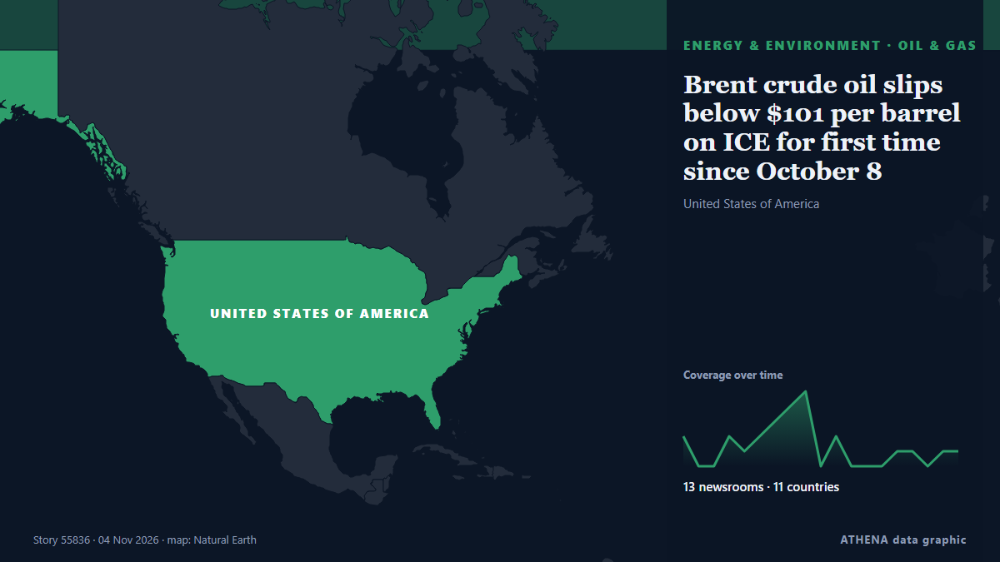

Energy, Resources & Environment
SponsoredPresented by  Cybernetics and Artificial Intelligence Lab Welcome to the Cybernetics and Artificial Intelligence Laboratory, established at the Department of Business Administration of the National and Kapodistrian University of Athens. The lab is headed by Professor Dimitrios Thomakos. The lab aims to do research that can be published in top venues. Our research uses tools and methods of Artificial Intelligence, and lies in the following areas: - Forecasting - Decision making - Cyber security - Finance We are always looking forward to collaborating with exceptional students!
Cybernetics and Artificial Intelligence Lab Welcome to the Cybernetics and Artificial Intelligence Laboratory, established at the Department of Business Administration of the National and Kapodistrian University of Athens. The lab is headed by Professor Dimitrios Thomakos. The lab aims to do research that can be published in top venues. Our research uses tools and methods of Artificial Intelligence, and lies in the following areas: - Forecasting - Decision making - Cyber security - Finance We are always looking forward to collaborating with exceptional students!

Oil & gasBrent crude oil slips below $101 per barrel on ICE for first time since October 8
As of 04:45 p.m. Moscow time, Brent crude stood at $100.80 per barrel. from TASS (English)
| 22 Oct | 84 |
|---|---|
| 23 Oct | 65 |
| 24 Oct | 38 |
| 25 Oct | 69 |
| 26 Oct | 79 |
| 27 Oct | 113 |
| 28 Oct | 89 |
| 29 Oct | 75 |
| 30 Oct | 92 |
| 31 Oct | 38 |
| 1 Nov | 56 |
| 2 Nov | 105 |
| 3 Nov | 64 |
| 4 Nov | 4 |
Brazil wraps up COP30 with fossil fuel, forest roadmaps, urging shift from talks to action
'We don't need more negotiations. What we need is for governments to start taking action,' says COP30 president Correa do Lago, who led last November's UN climate summit in Belem. from Rappler
Cabinet approves contract for 100 MWh battery storage system at Kolonnawa
The Cabinet has approved a contract to develop Sri Lanka’s first utility-scale Battery Energy Storage System (BESS) at the Kolonnawa Grid Substation. from Daily Mirror
Syria says it foiled Hezbollah plot to attack Homs oil refinery
Nov 3 - Syrian security forces have arrested members of a cell linked to Lebanese Iran-backed militant group Hezbollah accused of planning to attack the Homs oil refinery in central Syria, state news… from The Straits Times
Oil rises as peace prospects dim after US hits Iran’s Qeshm Island
BENGALURU: Oil prices rose more than $1 on Tuesday, as an Iranian official said a deal to the end the war was far off, while the US struck Iran’s Qeshm Island, fuelling concerns over the escalation… from Arab News
Congo seizes copper, cobalt in illegal mining crackdown
Authorities confiscate hundreds of vehicles and thousands of tons of minerals as Congo steps up enforcement at mine sites. from MINING.COM
Turkiye, South Korea Agree to Cooperate on Nuclear Plant Financing
The future of global industry belongs to clean, high-density power, and through our strategic... from Business Daily Africa
Europe entering winter with lowest gas reserves since 2013, says IEA
Europe's natural gas storage reservoirs were 75% full at the end of October, well below the minimum target of 80% fixed by the European Union and at its lowest level in more than a decade. from Free Malaysia Today
Oil drops 7% as Iran signals openness to peace talks
Both oil benchmarks closed lower for the day. from The Business Times
Petronet LNG reports 52.3% growth in net profits, in talks for availing undelivered cargoes
Along with their results, Petronet LNG also declared a dividend of ₹7 per equity share. from The Hindu
Kazakhstan Resumes Oil Exports Through Russian Pipeline After Drone Attack
Kazakhstan resumed oil shipments through the Atyrau-Samara pipeline on November 3, a day after a drone attack on a Russian. from The Times of Central Asia
Russia puts three thermal power plants out of action overnight
Extensive damage has halted power generation at three key facilities as Russian forces target critical energy infrastructure with missiles and drones. from Ukrainska Pravda (English)
Heavy rainfall, uprooted trees, power outages: Cyclone Murasu crosses Andhra coast
The system is expected to bring wind speeds of 100-110 kmph, Indian Meteorological Department (IMD) director General Mrutyunjay Mohapatra said. from NDTV
New Video Shows Fatal Explosion in Athens’ Plaka District
Security footage captures the blast that killed six people on September 21, while a second recording reportedly shows three suspects dividing stolen goods about an hour later. from to vima
Two Yaroslavl oil refinery staffers injured in Ukrainian drone attack — governor
According to Mikhail Yevrayev, electronic warfare systems and air defenses repelled the attack by 124 Ukrainian drones on the Yaroslavl oil refinery last night, and its infrastructure was damaged. from TASS (English)
Oil prices plunge on US-Iran detente hopes ahead of US midterms
Energy markets saw an aggressive pullback yesterday, with ICE Brent settling 7.6% lower and prices falling back below $105/bbl. from FXStreet
Philippines raises Mayon volcano alert to level 3 after explosive eruption
A nearly six-minute eruption sent an ash column 3,000 metres into the sky, prompting authorities to order evacuations within six kilometres of the crater amid warnings of lava flows and dangerous… from TRT World
World’s energy supply buffers have been eroded, ADNOC CEO says
The world has eroded its supply buffers by draining nearly 1 billion oil barrels from… from BusinessWorld
Goldman Sachs Raises December Brent Oil Price Forecast to $105
Goldman Sachs commodity analysts have revised their price forecast for Brent crude upwards, now expecting the benchmark to average $105 in December and remain elevated next year as well. from OilPrice.com
Mitsubishi to sell part of stake in Canada LNG project to Blackstone funds
A group led by US-based private equity firm Blackstone has agreed to invest $3.1 billion to acquire a 49.9 percent non-controlling interest in a Mitsubishi subsidiary that holds an interest in the… from LNG Prime
Final Turbine Stands Tall at 760MW Ecowende Wind Farm
All 52 wind turbines have been installed at the 760 MW Ecowende offshore wind farm in the Dutch North Sea, bringing the project into its final construction phase… from Offshore Engineer
Brazil Factory Prices Jump 4.34% in a Year
Brazil's producer prices rose 4.34% in the year to September and 1.54% in the month, well above forecasts, a warning for inflation and interest rates. from The Rio Times
UN reports warn of large-scale damage to Earth’s ice from climate change
Overshooting the 1.5 deg C Paris Agreement target will bring irreversible impacts for the cryosphere – Earth’s ice in all its forms. from The Straits Times
Fire breaks out at HPCL refinery in Visakhapatnam, no casualties reported
A fire broke out on Monday evening at Hindustan Petroleum Corporation Ltd's Visakh Refinery, causing significant concern in nearby industrial areas. from Times of India
Borr Drilling Prospector 5 Rig Incident Update
Borr Drilling Limited provides an update on the Prospector 5 incident offshore Gabon, first announced by the Company on October. from Cyprus Shipping News
Oil prices pull back sharply on signs of US-Iran diplomacy to end war
The cost of benchmark Brent crude dropped 7% on Monday to under 106 US dollars a barrel at one stage. from The Irish News (Belfast)
Flash Flooding Triggers Evacuations in Southwest and Dire Warning for Colorado Spa Town
LOS ANGELES, Nov 2, (AP): Heavy rainfall produced flash flooding and mandatory evacuations in a swath of the Southwest on Sunday, including in a Colorado tourist town bracing for... from Arab Times
HUR Confirms Russian Su-57 Explosion at Akhtubinsk Airfield
Ukraine’s military intelligence confirmed a Russian Su-57 stealth fighter jet burned down at the Akhtubinsk airfield on Thursday, attributing it to an engine startup failure due to suspected low jet… from Kyiv Post
UAE condemns attack on Qatar’s LNG carrier in Gulf
Qatar Gas Transport Company says no crew members injured, vessel remains safe and operational following Friday evening incident. from Anadolu Agency (English)
Drones attack Samara oil pumping station in Russia – media
Russia's Samara region came under a drone attack early on November 2. from Ukrinform (English)
Gemini 4 Carbon lags just behind Claude in benchmark, but wins in value
Google’s new frontier model, Gemini 4 Carbon, brings some welcome improvements and while it doesn’t top the charts in a new benchmark, it does provide much more bang for your buck. more… from 9to5Google
Emergency power outages begin in some Ukrainian oblasts
Unscheduled electricity outages have affected multiple oblasts as damaged high-voltage grids restrict transmission capacity, with Kyiv and Dnipropetrovsk hardest hit. from Ukrainska Pravda (English)
Ghana holds talks with Russia to build first nuclear power plant
Russian President Vladimir Putin met his Ghanaian counterpart John Dramani Mahama for bilateral talks the next day after Russia-Africa summit in Moscow. from Africanews (English)
US pushes to restore Russian gas sales to Europe via Ukraine, WSJ reports
The United States is backing a rapid resumption of Russian natural gas exports to Europe via pipelines crossing Ukraine as part of talks aimed at securing an energy ceasefire before… from Arab News
OPEC+ keeps December oil output targets steady ahead of tougher call for 2027
This aligns with expectations that further output policy adjustments will not occur until 2027. from The Business Times